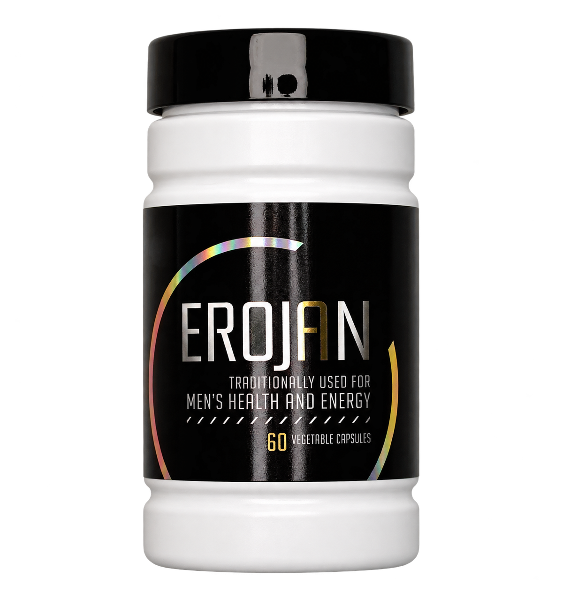

Manfaat yang jelas.
Membantu memelihara stamina pria, dengan penggunaan mengikuti aturan dan peringatan pada label Indonesia.
EROJAN BY WELLOUS · STAMINA PRIA
Membantu memelihara stamina pria. Kenali EROJAN, obat tradisional dengan enam bahan botani dalam kemasan 60 kapsul.
Tanyakan informasi produk, harga, dan pemesanan langsung kepada Eza.

Video Tora Sudiro tentang EROJAN · sekitar 52 detik
KENALI SEBELUM MEMILIH
Tora Sudiro menceritakan pengalamannya menggunakan EROJAN. Tonton videonya, lalu tanyakan informasi produk yang Anda perlukan kepada Eza.
Pengalaman pribadi dalam video bukan jaminan hasil yang sama pada setiap orang.
52 detik · dengan audioMENGAPA MEMPERTIMBANGKAN EROJAN
Merawat diri dimulai dari keputusan yang tepat. Kenali kegunaan dan informasi produk sebelum memasukkannya ke rutinitas Anda.
Membantu memelihara stamina pria, dengan penggunaan mengikuti aturan dan peringatan pada label Indonesia.
Enam bahan botani ditampilkan lengkap, termasuk nama ekstraknya. Anda bisa mempelajarinya sebelum membeli.
Dapatkan penjelasan informasi produk, harga, dan rincian pesanan melalui satu kontak WhatsApp.
KOMPOSISI EROJAN
Kenali bahan yang tercantum dalam produk. Cocokkan komposisi ini dengan label Indonesia pada kemasan.

Eurycoma Longifolia Radix Extract

Lepidium Meyenii Radix Ekstrak

Butea Superba Radix Ekstrak

Tribulus Terestris Fructus Ekstrak

Cuscuta Chinensis Herba Ekstrak

Epimedium Brevicornum Folium Ekstrak
Gambar merupakan ilustrasi bahan. Nama ekstrak mengacu pada catatan pemeriksaan registrasi BPOM, 1 November 2026. Rujukan: Cek BPOM dan informasi produk Wellous.
RUANG UNTUK MERAWAT DIRI
Perhatikan tidur, pola makan, dan aktivitas fisik Anda. Keluhan tersebut tidak otomatis berarti testosteron rendah atau Anda membutuhkan EROJAN. Jika menetap atau mengganggu keseharian, konsultasikan kepada tenaga kesehatan.
INFORMASI & PEMESANAN
Kenali produknya, tanyakan yang Anda perlukan, lalu pastikan rincian pesanan bersama Eza.
Stok, ongkir, dan total pembayaran dikonfirmasi sebelum pembayaran.
SEBELUM MEMUTUSKAN
Informasi yang membantu Anda mempelajari produk dan memeriksa data kemasannya.
Cocokkan data dengan label produk yang diterima. Informasi registrasi mengacu pada catatan pemeriksaan 1 November 2026; periksa status terbaru di kanal resmi.
Konfirmasikan jumlah produk, harga, ongkir, total pembayaran, serta ketentuan pesanan kepada Eza secara tertulis sebelum membayar. Baca ketentuan lengkap.
EROJAN merupakan Obat Tradisional dengan kegunaan membantu memelihara stamina pria. Ikuti aturan pakai, peringatan, dan perhatian pada label Indonesia.
Bukti spesifik produk dalam materi yang diperiksa belum cukup untuk menjanjikan perbaikan testosteron, peningkatan fokus, atau percepatan pemulihan tubuh. Keluhan yang menetap perlu dinilai oleh tenaga kesehatan.
Ikuti aturan pakai pada label Indonesia. Jangan melebihi aturan pakai. Jika memiliki kondisi medis atau sedang menggunakan obat lain, tanyakan kepada dokter atau apoteker sebelum menggunakan produk.
Periksa kemasan, segel, label, nomor izin edar, komposisi, kode produksi, serta kedaluwarsa. Cocokkan identitas produk dengan kanal resmi dan minta rincian pesanan tertulis dari Eza.
Hubungi Eza melalui WhatsApp untuk informasi harga, stok, dan ongkir. Pastikan rincian serta total pembayaran sudah disepakati sebelum membayar. Baca panduan pemesanan.